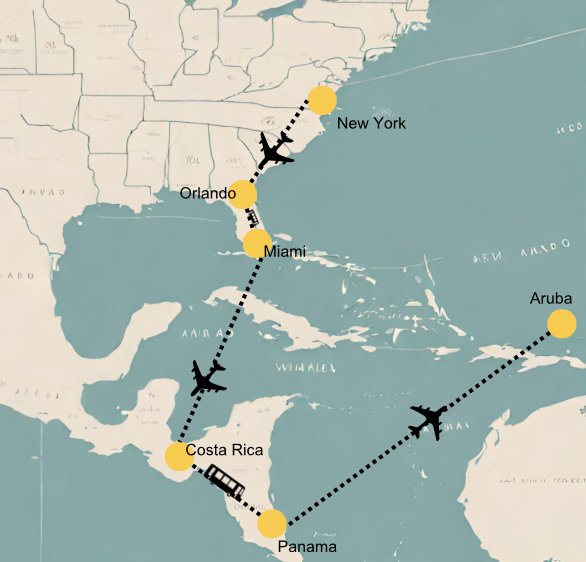

De reis van Debora
Backpacken was altijd al een droom van mij dus besloot ik om de reis te beginnen in Amerika. Ik had gekozen om in Amerika naar New York, Miami en Orlando te gaan. Deze steden bieden diverse bezienswaardigheden, bruisend nachtleven, adembenemende stranden en wereldberoemde attractieparken. Of je nu op zoek bent naar cultuur, avontuur of ontspanning, deze steden hebben voor ieder wat wils. Kortom, New York, Miami en Orlando zijn geweldige bestemmingen voor een onvergetelijke ervaring. Vervolgens zette ik de reis voort naar Costa rica, Costa Rica is ideaal voor backpackers vanwege zijn prachtige natuurlijke schoonheid, avontuurlijke activiteiten, vriendelijke bevolking en betaalbare mogelijkheden. Ik besloot te voet de grens over te steken van Costa Rica naar Panama en kwam vervolgens aan in Bocas del Toro, waar ik genoot van de prachtige stranden, tropische eilanden en levendige feestscene.Na mijn tijd in Bocas del Toro reisde ik naar Panama City, waar ik onder de indruk was van de mix van oude en moderne architectuur, zoals het historische Casco Viejo en de imposante wolkenkrabbers in het centrum.Vanuit Panama City nam ik vervolgens een vlucht naar Aruba, waar ik genoot van de idyllische stranden, turquoise wateren en bruisende uitgaansgelegenheden.
